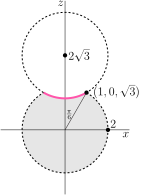

Section 3.4 Surface Area
Suppose that we wish to find the area of part, \(S\text{,}\) of the surface \(z=f(x,y)\text{.}\) We start by cutting \(S\) up into tiny pieces. To do so,
- we draw a bunch of curves of constant \(x\) (the blue curves in the figure below). Each such curve is the intersection of \(S\) with the plane \(x=x_0\) for some constant \(x_0\text{.}\) And we also
- draw a bunch of curves of constant \(y\) (the red curves in the figure below). Each such curve is the intersection of \(S\) with the plane \(y=y_0\) for some constant \(y_0\text{.}\)
Concentrate on any one the tiny pieces. Here is a greatly magnified sketch of it, looking at it from above.
We wish to compute its area, which we'll call \(\dee{S}\text{.}\) Now this little piece of surface need not be parallel to the \(xy\)-plane, and indeed need not even be flat. But if the piece is really tiny, it's almost flat. We'll now approximate it by something that is flat, and whose area we know. To start, we'll determine the corners of the piece. To do so, we first determine the bounding curves of the piece. Look at the figure above, and recall that, on the surface \(z=f(x,y)\text{.}\)
- The upper blue curve was constructed by holding \(x\) fixed at the value \(x_0\text{,}\) and sketching the curve swept out by \(x_0\,\hi+y\,\hj + f(x_0,y)\,\hk\) as \(y\) varied, and
- the lower blue curve was constructed by holding \(x\) fixed at the slightly larger value \(x_0+\dee{x}\text{,}\) and sketching the curve swept out by \((x_0+\dee{x})\,\hi+y\,\hj + f(x_0+\dee{x},y)\,\hk\) as \(y\) varied.
- The red curves were constructed similarly, by holding \(y\) fixed and varying \(x\text{.}\)
So the four intersection points in the figure are
Now, for any small constants \(\dee{X}\) and \(\dee{Y}\text{,}\) we have the linear approximation 1
Applying this three times, once with \(\dee{X}=0\text{,}\) \(\dee{Y}=\dee{y}\) (to approximate \(P_1\)), once with \(\dee{X}=\dee{x}\text{,}\) \(\dee{Y}=0\) (to approximate \(P_2\)), and once with \(\dee{X}=\dee{x}\text{,}\) \(\dee{Y}=\dee{y}\) (to approximate \(P_3\)),
Of course we have only approximated the positions of the corners and so have introduced errors. However, with more work, one can bound those errors (like we in the optional §3.2.4) and show that in the limit \(\dee{x},\dee{y}\rightarrow 0\text{,}\) all of the error terms that we dropped contribute exactly \(0\) to the integral.
The small piece of our surface with corners \(P_0\text{,}\) \(P_1\text{,}\) \(P_2\text{,}\) \(P_3\) is approximately a parallelogram with sides
Denote by \(\theta\) the angle between the vectors \(\overrightarrow{P_0P_1}\) and \(\overrightarrow{P_0P_2}\text{.}\) The base of the parallelogram, \(\overrightarrow{P_0P_1}\text{,}\) has length \(\big|\overrightarrow{P_0P_1}\big|\text{,}\) and the height of the parallelogram is \(\big|\overrightarrow{P_0P_2}\big|\,\sin\theta\text{.}\) So the area of the parallelogram is 2 , by Theorem 1.2.23,
The cross product is easily evaluated:
as is its length:
Throughout this computation, \(x_0\) and \(y_0\) were arbitrary. So we have found the area of each tiny piece of the surface \(S\text{.}\)
Equation 3.4.1.
For the surface \(z=f(x,y)\text{,}\)
Similarly, for the surface \(x=g(y,z)\text{,}\)
and for the surface \(y=h(x,z)\text{,}\)
Consequently, we have
Theorem 3.4.2.
- The area of the part of the surface \(z=f(x,y)\) with \((x,y)\) running over the region \(\cD\) in the \(xy\)-plane is\begin{equation*} \dblInt_\cD \sqrt{1 + f_x(x,y)^2 + f_y(x,y)^2}\ \dee{x}\dee{y} \end{equation*}
- The area of the part of the surface \(x=g(y,z)\) with \((y,z)\) running over the region \(\cD\) in the \(yz\)-plane is\begin{equation*} \dblInt_\cD \sqrt{1 + g_y(y,z)^2 + g_z(y,z)^2}\ \dee{y}\dee{z} \end{equation*}
- The area of the part of the surface \(y=h(x,z)\) with \((x,z)\) running over the region \(\cD\) in the \(xz\)-plane is\begin{equation*} \dblInt_\cD \sqrt{1 + h_x(x,z)^2 + h_z(x,z)^2}\ \dee{x}\dee{z} \end{equation*}
Example 3.4.3. Area of a cone.
As a first example, we compute the area of the part of the cone
with \(0\le z\le a\) or, equivalently, with \(x^2+y^2\le a^2\text{.}\)

Note that \(z=\sqrt{x^2+y^2}\) is the side of the cone. It does not include the top.
To find its area, we will apply 3.4.1 to
That forces us to compute the first order partial derivatives
Substituting them into the first formula in 3.4.1 yields
So
because \(\dblInt_{x^2+y^2\le a^2} \dee{x}\,\dee{y}\) is exactly the area of a circular disk of radius \(a\text{.}\)
Example 3.4.4. Area of a cylinder.
Let \(a,b \gt 0\text{.}\) Find the surface area of
The intersection of \(x^2+z^2=a^2\) with any plane of constant \(y\) is the circle of radius \(a\) centred on \(x=z=0\text{.}\) So \(\cS\) is a bunch of circles stacked sideways. It is a cylinder on its side (with both ends open). By symmetry, the area of \(\cS\) is four times the area of the part of \(\cS\) that is in the first octanct, which is
Since
the first formula in 3.4.1 yields
So
The indefinite integral of \(\frac{1}{\sqrt{a^2-x^2}}\) is \(\arcsin\frac{x}{a}+C\text{.}\) (See the table of integrals in Appendix A.4. Alternatively, use the trig substitution \(x=a\sin\theta\text{.}\)) So
and
We could have also come to this conclusion by using a little geometry, rather than using calculus. Cut open the cylinder by cutting along a line parallel to the \(y\)-axis, and then flatten out the cylinder. This gives a rectangle. One side of the rectangle is just a circle of radius \(a\text{,}\) straightened out. So the rectangle has sides of lengths \(2\pi a\) and \(b\) and has area \(2\pi ab\text{.}\)
Example 3.4.5. Area of a hemisphere.
This time we compute the surface area of the hemisphere
(with \(a \gt 0\)). You probably know, from high school, that the answer is \(\frac{1}{2}\times 4\pi a^2=2\pi a^2\text{.}\) But you have probably not seen a derivation 3 of this answer. Note that, since \(x^2+y^2 = a^2-z^2\) on the hemisphere, the set of \((x,y)\)'s for which there is a \(z\) with \((x,y,z)\) on the hemisphere is exactly \(\Set{(x,y)\in\bbbr^2}{x^2+y^2\le a^2}\text{.}\) So the hemisphere is
We will compute the area of \(S\) by applying 3.4.1 to
The first formula in 3.4.1 yields
So the area is \(\dblInt_{x^2+y^2\le a^2}\frac{a}{\sqrt{a^2-x^2-y^2}} \ \dee{x}\dee{y} \text{.}\) To evaluate this integral, we switch to polar coordinates, substituting \(x=r\cos\theta\text{,}\) \(y=r\sin\theta\text{.}\) This gives
as it should be.
Example 3.4.6.
Find the surface area of the part of the paraboloid \(z=2-x^2-y^2\) lying above the \(xy\)-plane.
The equation of the surface is of the form \(z=f(x,y)\) with \(f(x,y)=2-x^2-y^2\text{.}\) So
and, by the first part of 3.4.1,
The point \((x,y,z)\text{,}\) with \(z=2-x^2-y^2\text{,}\) lies above the \(xy\)-plane if and only if \(z\ge 0\text{,}\) or, equivalently, \(2-x^2-y^2\ge 0\text{.}\) So the domain of integration is \(\Set{(x,y)}{x^2+y^2\le 2}\) and
Switching to polar coordinates,
Exercises 3.4.1 Exercises
Exercises — Stage 1
1.
Let \(0 \lt \theta \lt \frac{\pi}{2}\text{,}\) and \(a,b \gt 0\text{.}\) Denote by \(S\) the part of the surface \(z=y\,\tan\theta\) with \(0\le x\le a\text{,}\) \(0\le y\le b\text{.}\)
- Find the surface area of \(S\) without using any calculus.
- Find the surface area of \(S\) by using Theorem 3.4.2.
2.
Let \(c \gt 0\text{.}\) Denote by \(S\) the part of the surface \(ax+by+cz=d\) with \((x,y)\) running over the region \(D\) in the \(xy\)-plane. Find the surface area of \(S\text{,}\) in terms of \(a\text{,}\) \(b\text{,}\) \(c\text{,}\) \(d\) and \(A(D)\text{,}\) the area of the region \(D\text{.}\)
3.
Let \(a,b,c \gt 0\text{.}\) Denote by \(S\) the triangle with vertices \((a,0,0)\text{,}\) \((0,b,0)\) and \((0,0,c)\text{.}\)
- Find the surface area of \(S\) in three different ways, each using Theorem 3.4.2.
- Denote by \(T_{xy}\) the projection of \(S\) onto the \(xy\)-plane. (It is the triangle with vertices \((0,0,0)\) \((a,0,0)\) and \((0,b,0)\text{.}\)) Similarly use \(T_{xz}\) to denote the projection of \(S\) onto the \(xz\)-plane and \(T_{yz}\) to denote the projection of \(S\) onto the \(yz\)-plane. Show that\begin{equation*} \text{Area}(S) =\sqrt{\text{Area}(T_{xy})^2 +\text{Area}(T_{xz})^2 +\text{Area}(T_{yz})^2 } \end{equation*}
Exercises — Stage 2
4. ✳.
Find the area of the part of the surface \(z=y^{3/2}\) that lies above \(0\le x,y\le 1\text{.}\)
5. ✳.
Find the surface area of the part of the paraboloid \(z = a^2 - x^2 - y^2\) which lies above the \(xy\)--plane.
6. ✳.
Find the area of the portion of the cone \(z^2 = x^2 + y^2\) lying between the planes \(z = 2\) and \(z = 3\text{.}\)
7. ✳.
Determine the surface area of the surface given by \(z = \frac{2}{3}\big(x^{3/2} + y^{3/2}\big)\text{,}\) over the square \(0 \le x \le 1\text{,}\) \(0 \le y \le 1\text{.}\)
8. ✳.
- To find the surface area of the surface \(z = f (x,y)\) above the region \(D\text{,}\) we integrate \(\dblInt_D F(x,y)\ \dee{A}\text{.}\) What is \(F(x,y)\text{?}\)
-
Consider a “Death Star”, a ball of radius \(2\) centred at the origin with another ball of radius \(2\) centred at \((0, 0, 2\sqrt{3})\) cut out of it. The diagram below shows the slice where \(y = 0\text{.}\)
- The Rebels want to paint part of the surface of Death Star hot pink; specifically, the concave part (indicated with a thick line in the diagram). To help them determine how much paint is needed, carefully fill in the missing parts of this integral:\begin{equation*} \text{surface area} = \int_{\underline{\ \ \ \ }}^{\underline{\ \ \ \ }} \int_{\underline{\ \ \ \ }}^{\underline{\ \ \ \ }} \underline{\ \ \ \ \ \ \ \ \ \ }\ \dee{r}\,\dee{\theta} \end{equation*}
- What is the total surface area of the Death Star?
- The Rebels want to paint part of the surface of Death Star hot pink; specifically, the concave part (indicated with a thick line in the diagram). To help them determine how much paint is needed, carefully fill in the missing parts of this integral:
9. ✳.
Find the area of the cone \(z^2=x^2+y^2\) between \(z=1\) and \(z=16\text{.}\)
10. ✳.
Find the surface area of that part of the hemisphere \(z=\sqrt{a^2-x^2-y^2}\) which lies within the cylinder \(\big(x-\frac{a}{2}\big)^2+y^2=\big(\frac{a}{2}\big)^2\text{.}\)